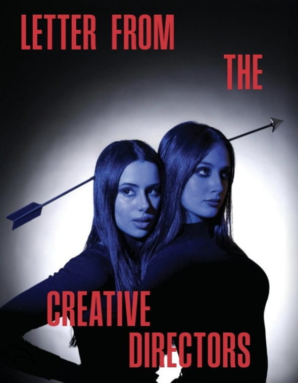
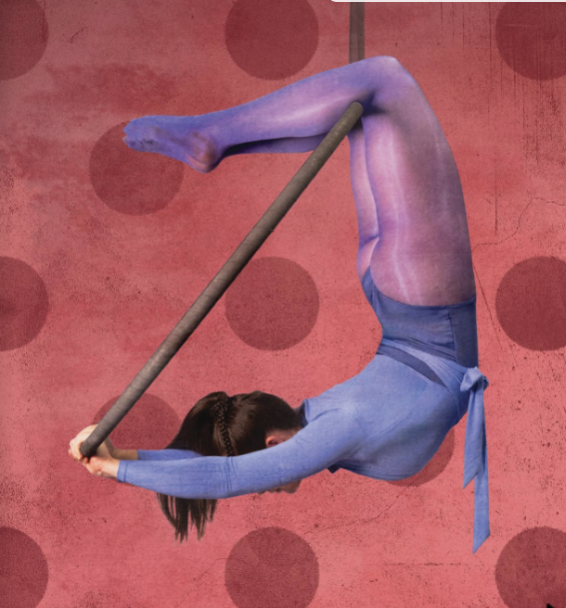
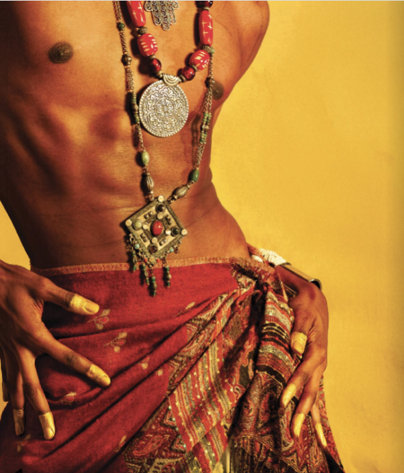
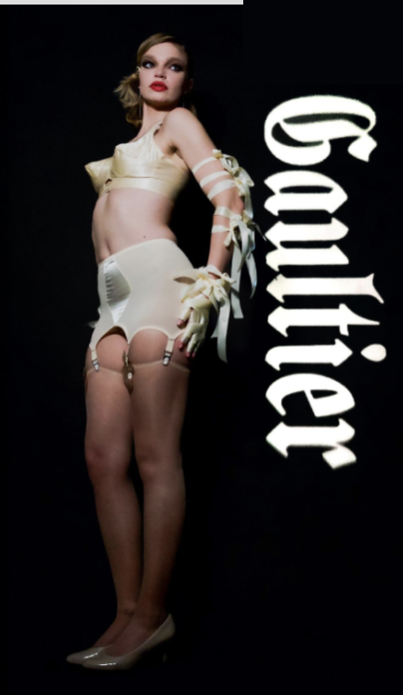
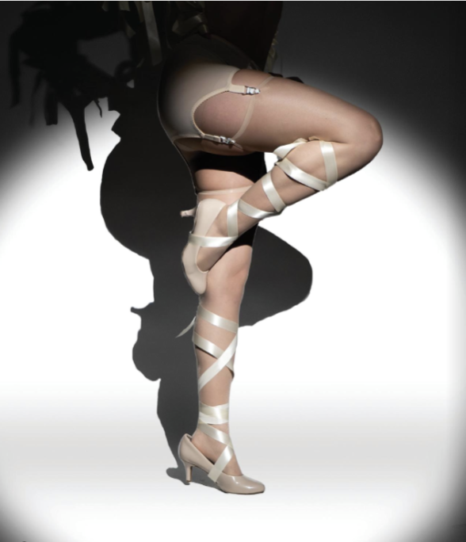
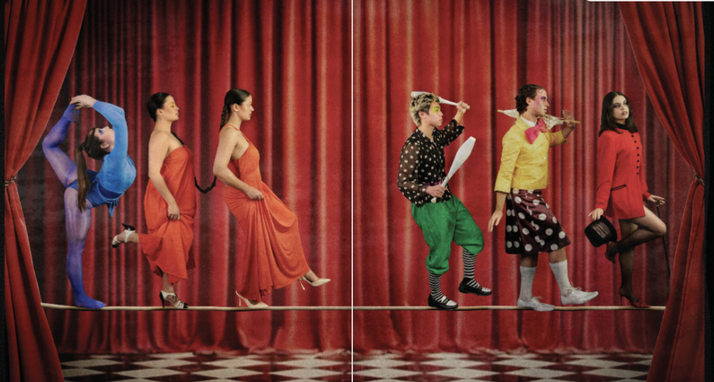

Bravado
Served as Creative Director for BRAVADO Magazine’s Issue 23, leading the visual concept, creative direction, and overall aesthetic. Focused on bold editorial storytelling, styling, and cohesive design to bring the issue’s vision to life.

- 17Stylists overseen
- 17Photographers coordinated
- 10Designers directed
- 9Hair & makeup artists led
- 8Set designers managed
- 8Video team supervised

Shot for Bravado Issue 23
Concept
BRAVADO exists at the intersection of performance and identity — a space where risk, tension, and beauty collide. For Issue 23, we explored what it means to take up space, to be seen, and to embrace the contradictions that define us.
“A celebration of contradiction — strength and softness, discipline and desire, control and chaos.”



My Role
As Creative Director, I oversaw every aspect of the issue from initial concept development to final print and digital. I led and managed a team across fashion, photography, design, hair & makeup, set design, and video — coordinating 50+ contributors, including stylists, photographers, designers, hair & makeup artists, set designers, and video team members. I directed fashion photography, curated and styled all editorial stories, and ensured a cohesive visual language across print and digital. I worked in close collaboration with the editorial team and my co-creative director Jaxx to bring the issue’s narrative to life, from moodboards and casting to on-set execution, layout, and final production.

“It was a collective exercise in trust, experimentation, and pushing boundaries.”
— Aya El Majdoubi
& Sukira Harris

Shot for Bravado Issue 23
Collaboration
Worked closely with co-creative director Jaxx to develop the issue’s creative framework, ensuring alignment across editorial, photography, design, and styling. Collaborated with the editorial team to refine story concepts, source talent, coordinate shoots, and translate ideas into a cohesive visual and written narrative.
Key Elements
- 01Concept development & moodboarding
- 02Fashion direction & styling
- 03Photography direction
- 04Hair & makeup coordination
- 05Set design & production
- 06Video direction & content
- 07Team management (50+ contributors)
- 08Print & digital design
- 09Editorial collaboration
- 10On-set production & execution
- 11Final layout & issue production

The Final Issue
Bravado — Issue 23
From concept to print.
Explore the complete issue and the work created by our team.